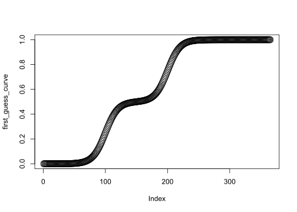
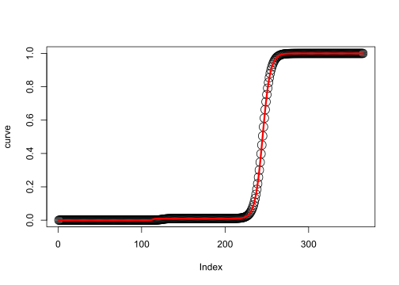
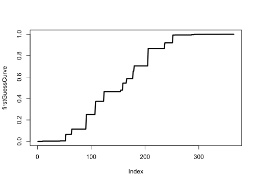
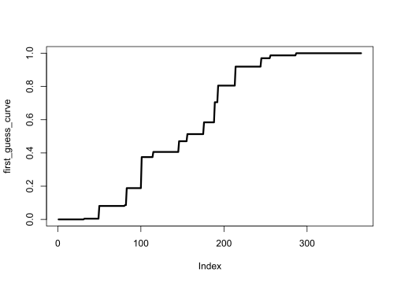
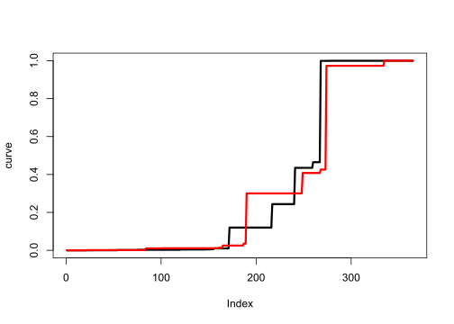
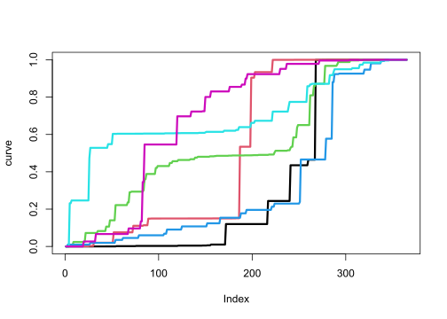
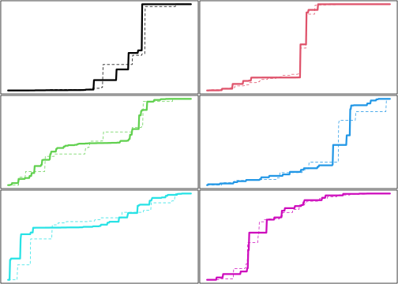
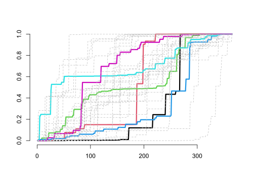

source("source/weatherModel.R")
source("source/print_parameter_comparison_table.R")6 Calibration walk through
Load source file containing the R implementation of the Weather model:
To generate new data based on a given dataset, we must first be able to estimate the Weather model parameters from said datasets. That is, to find the values of each parameter that can approximate the data of a given year daily series. Once this can be done for each year in the dataset, we can then estimate the hyperparameters as descriptive statistics (i.e., mean and standard deviation, minimum, maximum).
A good estimation of the parameters of the solar radiation and temperature submodels (i.e. sinusoid) can be made directly by measuring the year minimum and maximum.
However, the case of precipitation is far from trivial, given the complexity of the algorithm behind it. The workflow to estimate the parameters of the precipitation submodel deserves a demonstration.
6.1 Parameter estimation using optim()
Set up six variations of parameter settings of the annual double logistic curve (i.e. plateau_value, inflection1, rate1, inflection2, rate2), the discretisation producing the annual cumulative precipitation curve (i.e. n_samples, max_sample_size) and annualPrecipitation, assuming length of year of 365 days. Random generator seed used in discretisation is fixed:
# Fixed random seed for reproducibility
SEED <- 0
# Simulation parameters
YEAR_LENGTH <- 365
# Double logistic function parameters
params_values_double_logistic <- matrix(
c(0.01, 125, 0.3, 245, 0.22,
0.15, 63, 0.55, 195, 0.6,
0.5, 64, 0.05, 261, 0.12,
0.45, 215, 0.01, 276, 0.39,
0.6, 20, 0.38, 254, 0.04,
0.85, 97, 0.24, 219, 0.17),
nrow = 6,
byrow = TRUE,
dimnames = list(NULL, c("plateau_value", "inflection1", "rate1", "inflection2", "rate2"))
)
# Discretisation parameters
params_values_discretisation <- matrix(
c(152, 22,
220, 10,
240, 6,
168, 13,
191, 9,
205, 17),
nrow = 6,
byrow = TRUE,
dimnames = list(NULL, c("n_samples", "max_sample_size"))
)
# Annual sum values
annual_sum_values <- c(410, 1050, 636, 320, 1280, 745)Predefine the range of values explored for each parameter:
params_range_lower <- c(0, 1, 0.01, 1, 0.01, 1, 3)
params_range_upper <- c(1, 365, 0.9, 365, 0.9, 365, 30)6.1.1 Calibrating gen_annual_double_logistic_curve() (deterministic function)
Select the first set of parameter values from the params_values_double_logistic dataset and generate the corresponding curve with the gen_annual_double_logistic_curve() function. These points will represent the original state of the model that we aim to reverse engineer from the outcome curve. Plot it.
original_params <- params_values_double_logistic[1, 1:5]
curve <- gen_annual_double_logistic_curve(
plateau_value = original_params[1],
inflection1 = original_params[2],
rate1 = original_params[3],
inflection2 = original_params[4],
rate2 = original_params[5],
year_length = YEAR_LENGTH)
plot(curve, cex = 2)Define the initial_guess vector with your initial parameter guess values. Generate the curve using the gen_annual_double_logistic_curve() function with the initial guess. Plot it. Notice that our initial guess generates a somewhat “average” cumulative curve.
initial_guess <- c(0.5, 100, 0.1, 200, 0.1) # Initial parameter guess
first_guess_curve <- gen_annual_double_logistic_curve(
plateau_value = initial_guess[1],
inflection1 = initial_guess[2],
rate1 = initial_guess[3],
inflection2 = initial_guess[4],
rate2 = initial_guess[5],
year_length = YEAR_LENGTH)
plot(first_guess_curve, cex = 2)
Define the eval_objective_func() function that calculates the sum of squared differences between the observed data and the predicted values, generated by the gen_annual_double_logistic_curve() function with a given parameter setting. Then, use the optim() function to estimate the best parameter values by minimizing the objective function.
NOTE: optim() using method “L-BFGS-B”, see ?optim or:
> Byrd, R. H., Lu, P., Nocedal, J. and Zhu, C. (1995). A limited memory algorithm for bound constrained optimization. SIAM Journal on Scientific Computing, 16, 1190–1208. doi:10.1137/0916069.
observed_data <- curve
# Objective function to minimize (difference between observed and predicted values or "residual")
eval_objective_func <- function(params) {
predicted_data <- gen_annual_double_logistic_curve(params[1], params[2], params[3], params[4], params[5], YEAR_LENGTH)
sum((observed_data - predicted_data)^2)
}
# Use the least squares method to estimate the parameter values
fit <- optim(initial_guess, eval_objective_func,
method = "L-BFGS-B",
lower = params_range_lower[1:5],
upper = params_range_upper[1:5])
best_estimation_curve <- gen_annual_double_logistic_curve(fit$par[1], fit$par[2], fit$par[3], fit$par[4], fit$par[5], YEAR_LENGTH)Plot the original curve (curve) and overlay it with the curve generated using the best estimated parameter values (best_estimation_curve). The best estimated curve is shown in red.
plot(curve, cex = 2)
lines(best_estimation_curve, col = 'red', lwd = 3)
print_parameter_comparison_table(original_params, fit, params_range_upper[1:5], params_range_lower[1:5])| original | estimated | delta | range | delta (%) | |
|---|---|---|---|---|---|
| plateau_value | 0.01 | 0.0090998 | 0.000900 | 1.00 | 0.0900 |
| inflection1 | 125.00 | 113.7955514 | 11.204449 | 364.00 | 3.0781 |
| rate1 | 0.30 | 0.8999843 | 0.599984 | 0.89 | 67.4140 |
| inflection2 | 245.00 | 244.9879056 | 0.012094 | 364.00 | 0.0033 |
| rate2 | 0.22 | 0.2195381 | 0.000462 | 0.89 | 0.0519 |
We can see that reverse engineering the parameter values of the double logistic curve is relatively straightforward. This specific curve offers a clear hint that rate1 and rate2 (i.e. the maximum growth rates of each logistic component) are harder to estimate when plateau_value is extreme .
6.1.2 Adding discretise_curve() (stochastic function)
However, precipitation in the Weather model presents an additional challenge: the continuous cumulative curve is broken down into “steps” through discretise_curve(), which introduces stochasticity. We will also add rescale_curve() to the end of the process, in order to approach the curve that would be created by generate_annual_precipitation().
Let us extend the workflow used above with gen_annual_double_logistic_curve() to also cover the two additional parameters of discretise_curve() (for now, fix seed = 0):
original_params <- c(params_values_double_logistic[1, 1:5], params_values_discretisation[1, 1:2])
curve <- gen_cum_precipitation_of_year(
plateau_value = original_params[1],
inflection1 = original_params[2],
rate1 = original_params[3],
inflection2 = original_params[4],
rate2 = original_params[5],
year_length = YEAR_LENGTH,
n_samples = original_params[6],
max_sample_size = original_params[7],
seed = SEED)
plot(curve, type = 'l', lwd = 3)
initial_guess <- c(0.5, 100, 0.1, 200, 0.1, 180, 15) # Initial parameter guess
first_guess_curve <- gen_cum_precipitation_of_year(
plateau_value = initial_guess[1],
inflection1 = initial_guess[2],
rate1 = initial_guess[3],
inflection2 = initial_guess[4],
rate2 = initial_guess[5],
year_length = YEAR_LENGTH,
n_samples = initial_guess[6],
max_sample_size = initial_guess[7],
seed = SEED)
plot(first_guess_curve, type = 'l', lwd = 3)
observed_data <- curve
# Objective function to minimize (difference between observed and predicted values)
eval_objective_func <- function(params) {
predicted_data <- gen_cum_precipitation_of_year(
plateau_value = params[1],
inflection1 = params[2], rate1 = params[3],
inflection2 = params[4], rate2 = params[5],
year_length = YEAR_LENGTH,
n_samples = params[6],
max_sample_size = params[7],
seed = SEED
)
sum((observed_data - predicted_data)^2)
}
# Use the least squares method to estimate the parameter values
fit <- optim(initial_guess, eval_objective_func,
method = "L-BFGS-B",
lower = params_range_lower,
upper = params_range_upper)
best_estimation_curve <- gen_cum_precipitation_of_year(
plateau_value = fit$par[1],
inflection1 = fit$par[2], rate1 = fit$par[3],
inflection2 = fit$par[4], rate2 = fit$par[5],
year_length = YEAR_LENGTH,
n_samples = fit$par[6],
max_sample_size = fit$par[7],
seed = SEED
)plot(curve, type = 'l', lwd = 3)
lines(best_estimation_curve, col = 'red', lwd = 3)
print_parameter_comparison_table(original_params, fit, params_range_upper, params_range_lower)| original | estimated | delta | range | delta (%) | |
|---|---|---|---|---|---|
| plateau_value | 0.01 | 0.0126065 | 0.002606 | 1.00 | 0.2606 |
| inflection1 | 125.00 | 100.2542491 | 24.745751 | 364.00 | 6.7983 |
| rate1 | 0.30 | 0.9000000 | 0.600000 | 0.89 | 67.4157 |
| inflection2 | 245.00 | 250.3699407 | 5.369941 | 364.00 | 1.4753 |
| rate2 | 0.22 | 0.9000000 | 0.680000 | 0.89 | 76.4045 |
| n_samples | 152.00 | 143.9652346 | 8.034765 | 364.00 | 2.2074 |
| max_sample_size | 22.00 | 30.0000000 | 8.000000 | 27.00 | 29.6296 |
Close, but a much worse fit than obtained with gen_annual_double_logistic_curve() only. We should take this performance in consideration going forward.
6.1.3 Calibrating multiple example curves to determine hyperparameters
Let us now apply the same workflow for estimating the hyperparameters able to generate an approximation of a sequence of year daily series.
First, generate the original dataset based on the different configurations present in params_values_double_logistic and params_values_discretisation:
curves <- list()
original_params_list <- list()
for (i in 1:nrow(params_values_double_logistic))
{
original_params <- c(params_values_double_logistic[i, 1:5], params_values_discretisation[i, 1:2])
curve <- gen_cum_precipitation_of_year(
plateau_value = original_params[1],
inflection1 = original_params[2],
rate1 = original_params[3],
inflection2 = original_params[4],
rate2 = original_params[5],
year_length = YEAR_LENGTH,
n_samples = original_params[6],
max_sample_size = original_params[7],
seed = SEED
)
curves[[i]] <- curve
original_params_list[[i]] <- original_params
}
plot(curves[[1]], type = 'l', col = 1, lwd = 3, ylab = 'curve')
for (i in 2:length(curves))
{
lines(curves[[i]], col = i, lwd = 3)
}
Apply optim, reusing initial_guess and eval_objective_func, to each curve and generate a sequence of best estimation curves:
best_estimation_curves <- list()
best_estimation_fits <- list()
for (i in 1:nrow(params_values_double_logistic))
{
observed_data <- curves[[i]]
# Use the least squares method to estimate the parameter values
fit <- optim(initial_guess, eval_objective_func,
method = "L-BFGS-B",
lower = params_range_lower,
upper = params_range_upper)
best_estimation_curve <- gen_cum_precipitation_of_year(
plateau_value = fit$par[1],
inflection1 = fit$par[2], rate1 = fit$par[3],
inflection2 = fit$par[4], rate2 = fit$par[5],
year_length = YEAR_LENGTH,
n_samples = fit$par[6],
max_sample_size = fit$par[7],
seed = SEED)
best_estimation_curves[[i]] <- best_estimation_curve
best_estimation_fits[[i]] <- fit
}Plot original and estimated curves:
layout(matrix(1:6, nrow = 3, ncol = 2, byrow = TRUE))
par(mar = c(0.1, 0.1, 0.1, 0.1))
for (i in 1:length(curves)) {
plot(curves[[i]], type = 'l', col = i, lwd = 3, xaxt = 'n', yaxt = 'n')
lines(best_estimation_curves[[i]], col = i, lty = 2)
}
Visualise the aggregate estimation quality:
# Helper functions
calculate_mean_sd <- function(list_of_vectors) {
if (length(list_of_vectors) == 0) return(list(mean = numeric(0), sd = numeric(0)))
values_matrix <- do.call(rbind, list_of_vectors)
list(
mean = colMeans(values_matrix),
sd = apply(values_matrix, 2, sd)
)
}
get_list_params_from_fit <- function(list_of_fit_objects) {
lapply(list_of_fit_objects, `[[`, "par")
}
# Main functions
create_parameter_comparison_summary <- function(original_params_list, fits, params_range_upper, params_range_lower) {
original_summary <- calculate_mean_sd(original_params_list)
estimated_summary <- calculate_mean_sd(get_list_params_from_fit(fits))
data.frame(
original_mean = round(original_summary$mean, digits = 4),
original_sd = round(original_summary$sd, digits = 4),
estimated_mean = round(estimated_summary$mean, digits = 4),
estimated_sd = round(estimated_summary$sd, digits = 4),
delta_mean = round(abs(original_summary$mean - estimated_summary$mean), digits = 6),
delta_sd = round(abs(original_summary$sd - estimated_summary$sd), digits = 6),
#range = params_range_upper - params_range_lower,
delta_mean_percent = round(
100 * abs(original_summary$mean - estimated_summary$mean) / (params_range_upper - params_range_lower),
digits = 4
),
delta_mean_percent = round(
100 * abs(original_summary$sd - estimated_summary$sd) / (params_range_upper - params_range_lower),
digits = 4
)
)
}
print_parameter_comparison_summary_table <- function(parameter_comparison_summary) {
knitr::kable(parameter_comparison_summary,
format = "html",
col.names = c(
"original (mean)", "original (sd)",
"estimated (mean)", "estimated (sd)",
"delta (mean)", "delta (sd)",
"delta (mean%)", "delta (sd%)"),
align = c("c", "c", "c", "c", "c", "c", "c", "c"))
}
# Execution
parameter_comparison_summary <- create_parameter_comparison_summary(original_params_list, best_estimation_fits, params_range_upper, params_range_lower)
print_parameter_comparison_summary_table(parameter_comparison_summary)| original (mean) | original (sd) | estimated (mean) | estimated (sd) | delta (mean) | delta (sd) | delta (mean%) | delta (sd%) | |
|---|---|---|---|---|---|---|---|---|
| plateau_value | 0.4267 | 0.3051 | 0.5238 | 0.4174 | 0.097147 | 0.112358 | 9.7147 | 11.2358 |
| inflection1 | 97.3333 | 67.6481 | 64.9747 | 49.8331 | 32.358633 | 17.815035 | 8.8897 | 4.8942 |
| rate1 | 0.2550 | 0.2034 | 0.4256 | 0.4247 | 0.170560 | 0.221209 | 19.1640 | 24.8549 |
| inflection2 | 241.6667 | 29.6895 | 256.9584 | 60.9816 | 15.291717 | 31.292059 | 4.2010 | 8.5967 |
| rate2 | 0.2567 | 0.2050 | 0.4631 | 0.4623 | 0.206456 | 0.257308 | 23.1973 | 28.9110 |
| n_samples | 196.0000 | 32.6741 | 159.1494 | 24.7352 | 36.850629 | 7.938989 | 10.1238 | 2.1810 |
| max_sample_size | 12.8333 | 5.8452 | 21.6078 | 10.1365 | 8.774432 | 4.291308 | 32.4979 | 15.8937 |
Although the original example curves are quite different from each other, let us assume that they correspond to cumulative precipitation of six years at a single location. This will allow us to test the optim calibration workflow on our ultimate target, the precipitation hyperparameters of the Weather model.
Initialise the weather model setting the precipitation hyperparameters as the mean and standard deviation of the best estimation parameter values in parameter_comparison_summary:
weather_model <- initialise_weather_model(
seed = 0,
precip_plateau_value_mean = parameter_comparison_summary["plateau_value", "estimated_mean"],
precip_plateau_value_sd = parameter_comparison_summary["plateau_value", "estimated_sd"],
precip_inflection1_mean = parameter_comparison_summary["inflection1", "estimated_mean"],
precip_inflection1_sd = parameter_comparison_summary["inflection1", "estimated_sd"],
precip_rate1_mean = parameter_comparison_summary["rate1", "estimated_mean"],
precip_rate1_sd = parameter_comparison_summary["rate1", "estimated_sd"],
precip_inflection2_mean = parameter_comparison_summary["inflection2", "estimated_mean"],
precip_inflection2_sd = parameter_comparison_summary["inflection2", "estimated_sd"],
precip_rate2_mean = parameter_comparison_summary["rate2", "estimated_mean"],
precip_rate2_sd = parameter_comparison_summary["rate2", "estimated_sd"],
precip_n_samples_mean = parameter_comparison_summary["n_samples", "estimated_mean"],
precip_n_samples_sd = parameter_comparison_summary["n_samples", "estimated_sd"],
precip_max_sample_size_mean = parameter_comparison_summary["max_sample_size", "estimated_mean"],
precip_max_sample_size_sd = parameter_comparison_summary["max_sample_size", "estimated_sd"]
)Run the model to generate a number of cumulative curves:
weather_model <- run_weather_model(weather_model, num_years = 30, show_warnings = FALSE)Plot original and generated curves:
plot(c(1, weather_model$PARAMS$year_length), c(0, 1), ann = F, bty = 'n', type = 'n', ylab = 'curve')
# original curves
for (i in 1:length(curves))
{
lines(curves[[i]], col = i, lwd = 3)
}
# generated curves
for (year in unique(weather_model$daily$current_year))
{
lines(1:weather_model$PARAMS$year_length,
get_cumulative_precipitation_of_year(
weather_model$daily$precipitation[
weather_model$daily$current_year == year
]),
col = "grey",
lty = 2)
}